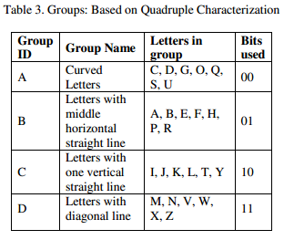
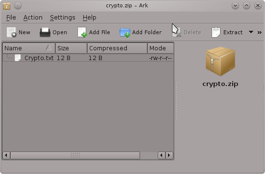
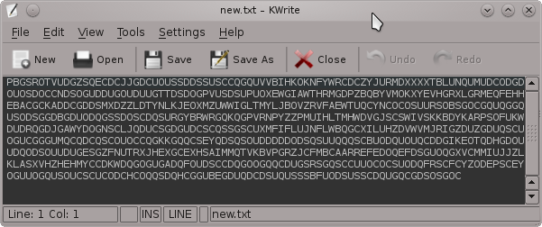

HackFu 2012: A novel approach to stenography
Hello everyone. I recently discovered “HackFu 2012”, a contest organized by MWR InfoSecurity. The registration period is long finished but I was interested in trying my hand at the challenge files. I don't have allot of time right now since I’m enrolled in a security certificate and I'll be starting a job soon but I wanted to do a write-up about the initial stenography challenge.
To qualify for HackFu you have to complete a number of challenges that are included in a zip file but to get access to them you need to tackle your first brainteaser. The zip file is encoded using an encryption process described in a pdf I have included below.
For the purpose of this write-up I have generated my own custom “crypto.txt” which is an encoded version of “crypto.zip” for you to play with so you don't need to work with the HackFu challenge file. I have also included a small program I made called "GlueGun.py" which can decode and encode files based on the stenography algorithm.
MWR HackFu 2012: here
Stenography pdf: download
crypto.txt + crypto.zip: download
GlueGun.py: download
(1) Overview
So I'll make a quick break-down of the stenographic encryption. A file (any kind of file) is converted to binary bits (1's and 0's) and then sequences of these bits are converted to upper case letters based on a certain rule-set. The pdf describes different conversion schemes, for your convenience I have included a screenshot of the scheme that was used in the HackFu challenge.

Lets have a quick look at the simple "crypto.txt" file I generated.
root@bt:~/Desktop# cat crypto.txt APQSFDKMUSCMOCEGDCLKGCQQDQOCSCCSGGSOOSOQZNPTBIOKVPTZASGCNKTOPNUXXMMKEJCWUQNQQSQQQCQCUOODUQNCCDUCOGCGCUSGDU JLSOSGGHNSCGCQRDONEZOLANTHFVQCENEUHIZVOYXLAXRUHZTOPXPSAHRBERBSSOYRUDQGDQOXVUZMTSIIVYYIAOXWVDMVKOIJMJYLEQNV AVERANLDCSTWGSGQGGQPUDROUOOOUOUQCQCGSOSSUOFGOCODUCUDOCSSUDGDPUKFBMACDIQSPMPXHYNWPZUTELIVBMGVDTQOSXKXDJLACY IHFEGSEOKMOQDFDSSLOPVTCQSNSQTLODOCOSQDUCSQDGQCUCUDVMHYPJGLVEJMBUUOMYKQRMONMMZIRIGVQGNQUQQSGSQQDDSSCOMCDGQD UODGCCUCQQTKCUOOGBTUQQDGDSUUOSSCUSSSDODCQOUEUSDDOGQSGQDGJTFGTUCRUDSOGUGSDODQQODQPQGZAZQJEVTEHZUGPMHUAIVVCK WLBMADRZLGRVRQARAPABAUCQAHDOUUQDQNNOWXLQITWTTTEOXMHXPFAZYCOQKXOCDGCUGPODRQDUCUOUSGSSSCUOCDQOBOGUUOOQUSGGDO COUGPBOUHQIVGOBAQGETDCDQUCUOCOOODCCSUUQEGDUCQDDEQCQDHBCQCSCDCGCGDCCOEHSUCUOSSUQQDQCQUDSQGQGO
Based on the proposed conversion scheme in the screenshot you can convert the ASCII to binary bits, for example A=01, P=01, Q=00 and so on.. If you do this the file size will be doubled, you can see the result below.
root@bt:~/Desktop# cat BinBits.txt 0101000001001011000000110000010000001010000000000000000000000000000000000000000011110110011000101101101101 0000001110100001110011111111100110001100001100000000000000000000000000000011000000000000000000000000000000 1010000000000001110000000000010000110111001001111001011100000111010001101111001011100111010001111000011101 0001010101010101000000100100000000000000111100111110001010111010100100111111001111100010101110101001001111 0111010101111000000010110000000000000001000001000000000000000000000000000000000000000100000000000000000000 0000000000000001001001011101000010000001110111011011110111001001101011011100110010000000111011001010010010 1001010100000100101100000001000000100001111000000011000010100000000000000000000000000000000000000000111101 1001100010110110110100000011101000011100111111111001100011000011000000000000000000000000000000110000000000 0000000000000000000010100000000000011000000000000000000000000000000000000000000000000001000000000000000000 0000001010010010000001000000000000000000000000000000000100001101110010011110010111000001110100011011110010 1110011101000111100001110100010101010101010000000101000000000000001111001111100010101110101001001111011101 0101111000000010110000000000000001000001000000000000000000000000000000000000000100000000000000000000000000 0000000001010000010010110000010100000110000000000000000000000000000000000000000100000000000000010000000001 010000000000000000000000000000010100000000000000000000000000000000000000000000
So far it seems pretty straight forward, now we need to find a way to convert these binary bits to raw binary. I'm not sure if this is the best way but I first converted these bits to hex, you can see the result below. Notice that the file size is greatly reduced.
root@bt:~/Desktop# cat HexBits.txt 504b03040a0000000000f662db40e873fe630c0000000c0000000a001c0043727970746f2e7478745554090003cf8aea4fcf8aea4f 75780b000104000000000400000000497420776f726b73203b2929504b01021e030a0000000000f662db40e873fe630c0000000c00 00000a0018000000000001000000a4810000000043727970746f2e7478745554050003cf8aea4f75780b0001040000000004000000 00504b0506000000000100010050000000500000000000
In the final faze I converted the hex to raw binary, renamed “crypto.txt” to “crypto.zip” and like magic the original zip file appears intact. My zip just includes a text file which contains the string “It works ;))”.

(1) GlueGun
Before we get to it perhaps I should explain that I chose the name GlueGun because I did some quick prototyping and it feels like the code is glued together but I’ll leave that to the readers own discretion.
When I first did this challenge I rushed it a bit and used various code snippets I found online to do the decryption. However I enjoyed the challenge and thought to myself why not write some custom code to do the decryption and even more have it encrypt files to.
For full details I suggest you check out the source code. I will just mention that decryption was fairly easy. I used dictionary key pairs to exchange the uppercase ASCII with the relevant bits and then various built in python functions to do the other conversions. Encryption was a bit more tricky. The main drawback to encryption is that large files take a considerable amount of time to encrypt. The reason for the slow conversion is that the binary bits need to be read two bytes at a time and then randomly converted according to the character group.
The program is just a crude prototype and could me much improved (perhaps with encryption assigned to workers in a queue) but it works well enough to encrypt and decrypt files. If anyone has any suggestions please feel free to leave a comment.
root@bt:~/Desktop# ./GlueGun.py -------------------------------------------------------------------- | GlueGun v1.0 ~ b33f | | -HackFu 2012 Stenograpy Encoder/Decoder- | -------------------------------------------------------------------- Usage: GlueGun.py -t (e/d) -i (input file) -o (output file) GlueGun.py: error: Invalid input, check -h/--help for an extended usage menu... root@bt:~/Desktop# ./GlueGun.py --help Usage: GlueGun.py -t (e/d) -i (input file) -o (output file) Options: -h, --help show this help message and exit -t TYPE, --type=TYPE Encode or Decode (e/d) -i IF, --in=IF Set input file (eg: crypt.txt, output.zip,...) -o OF, --out=OF Set output file (eg: crypt.txt, output.zip,...) root@bt:~/Desktop# ./GlueGun.py -t d -i crypto.txt -o crypto.zip
This final command should reproduce all the steps shown above and generate the intact zip file. You can also encrypt files and you can test this by re-encrypting the "crypto.zip" the new text file should be different but follow the same encryption rules. You can see a sample re-encryption of "crypto.zip" below.
root@bt:~/Desktop# ./GlueGun.py -t e -i crypto.zip -o new.txt
